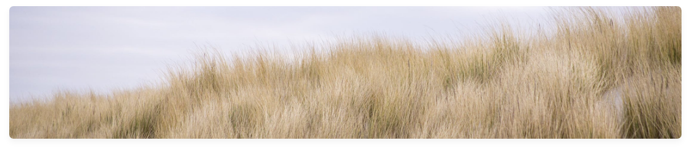

The Curonian Spit is a 98 km long, thin, curved sand-dune spit that separates the Curonian Lagoon from the Baltic Sea coast. Its southern portion lies within Kaliningrad Oblast, Russia and its northern within southwestern Lithuania. It is a UNESCO World Heritage Site shared by the two countries.

FEATURED
Exploring the Curonian spit
Published Yesterday, 21:23 Written by DaumantasGeography
The Curonian Spit stretches from the Sambian Peninsula on the south to its northern tip next to a narrow strait, across which is the port city of Klaipėda on the mainland of Lithuania. The northern 52 km long stretch of the Curonian Spit peninsula belongs to Lithuania, while the rest is part of the Kaliningrad Oblast, Russia. The width of the spit varies from a minimum of 400 m in Russia (near the village of Lesnoy) to a maximum of 3,800 m in Lithuania (just north of Nida).
History
The Curonian Spit was formed about 3rd millennium BC. A glacial moraine served as its foundation; winds and sea currents later contributed enough sand to raise and keep the formation above sea level.
Current state
The Curonian Spit is home to the highest moving (drifting) sand dunes in Europe. Their average height is 35 meters, but some attain a height of 60 meters. Several ecological communities are present on and near the Spit, from its outer beaches to dune ridges, wetlands, meadows, and forests. Its location on the East Atlantic Flyway means it is frequently visited by migratory waterfowl. Between 10 and 20 million birds fly over the feature during spring and fall migrations, and many pause to rest or breed there.